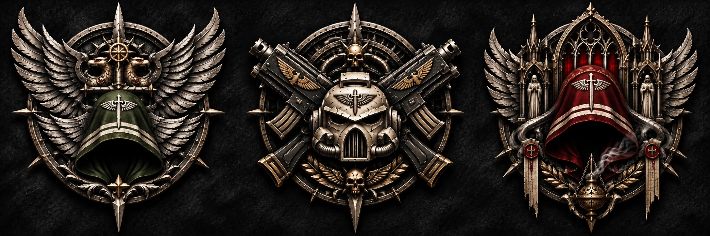
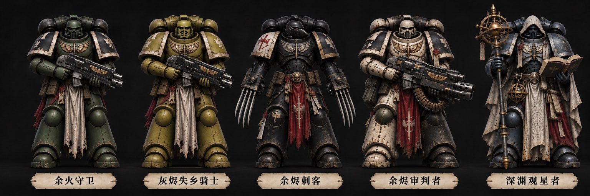
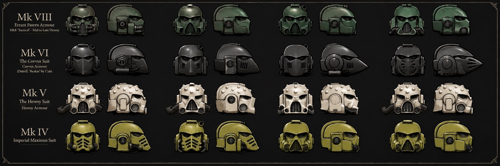
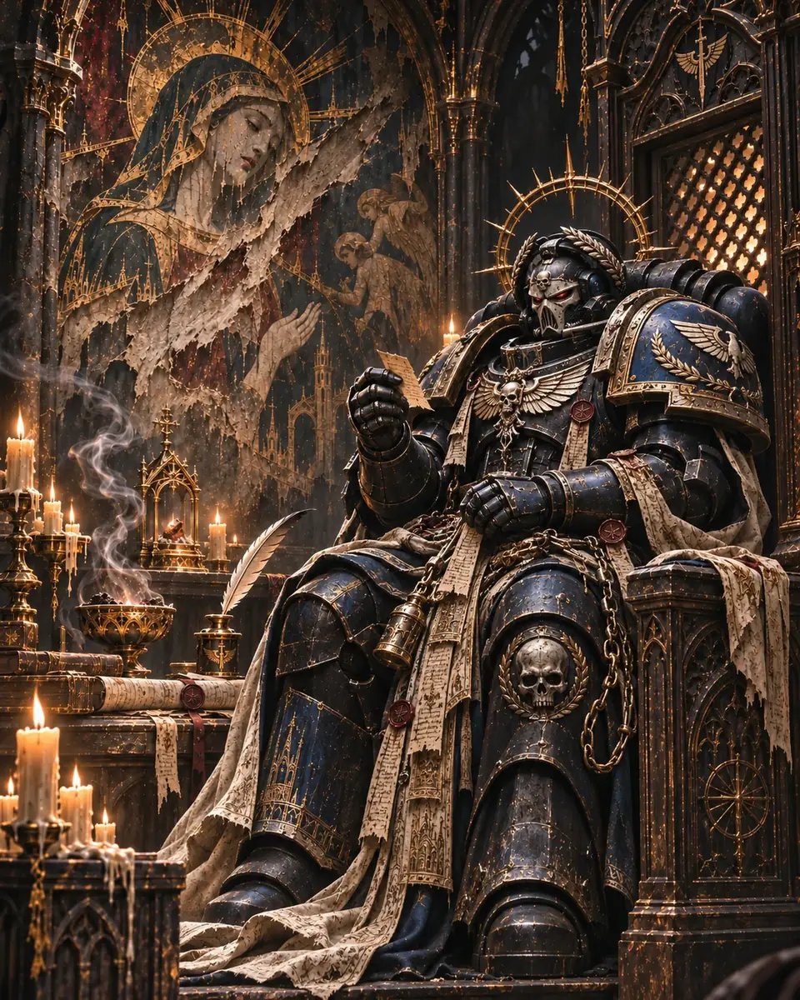

八、战团原则与仪礼
五条旧誓

深渊不可无人。 井口常驻十三名当值者。
静默优先于开火。 先断耳目，再动兵刃。
信息优先于歼灭。 敌人的中继、数据与口供，须有人带回。
律法不可扩散。 活性遗物不得越过希芙拉封锁线。
证词不可废弃。 未经审判，不得焚毁俘虏的供词。
甲色与归航

军械库旧簿记载：余火守卫采用深绿动力甲，巡礼骑士采用余烬绿；图版中的灰烬失乡骑士保留黄绿色旧甲。余烬刺客、暗夜骑兵及部分神职战士使用夜渊黑；风暴骑士与余烬审判者着烬骨白；深渊观星者保留伪星蓝的银蓝饰甲。
暗绿胸甲旁悬着骨白色头盔与披袍，老兵的斗篷多为褪色的深红；有人仍穿着补过数次的灰白长袍。肩甲和旗面上的飞翼剑徽出自第一军团，老兵保留它而不自称其为隐修会独有。金穹归航簿与战旗背面另留有一枚“断环中的余烬”印记；它尚未统一绘在每副肩甲上。军械官把战功纹记缝在旗边，而不磨平甲上的旧伤。不同年代的战士并排列队时，常能一眼看出哪几副铠甲经历过同一场战役。

出征时，旗官在金穹念出应归人数。出征者将旗举过圣匣，沿旧伤员坡道步入石廊。老兵扶正新人的披袍与佩剑，伤员若还能站立，也会回到自己的位置。舰队不循原路归乡。伤亡簿先送石廊；未归者的甲架暂不熄灯。
一次归航时，一支舰队带回了完整的护航船队。金穹的钟连响三次，旧渠人送来盐和热面饼。有人把伤亡簿递给旗官；旗官先将它收在臂下，听完了庆贺，才走入石廊。
旧渠的候选人
〔征募地·旧渠外缘〕
孩子们从辐射矿道走来，鞋底沾着白灰。名单中有人在测试前就被划去。入选者要独处静默舱七日，饮烬礼的杯沿有一道旧裂痕。无名侍从多年不得佩甲；第一次远征归来的人，也未必能获准受甲。
井口守夜十三小时。问卷上只印一句：你听见了什么？
一名候选人通过了静默试炼，却没能承受后续植入。药剂师将他送回矿道，手术痕迹从锁骨一直延到肋下。家门前那袋盐还在，母亲却已不知道该用他入选前的名字，还是登记簿上被划去的编号叫他。
〔静滞舱观察窗〕
有人喊出了自己的名字。窗外还贴着他入选时的姓名。
真名
骑士在外多用编号与头衔。真名封于内环；获准刻录者，由院长在胸甲内侧心脏上方落刀。
卡斯托尔在黑铁条约行动中请求暗黑天使追杀舰协助，救下一个小队。裁决书留下八个字：“律法不可外包。”他仍在服役。
伊格纳修斯的声音与深渊脉动混杂。每次开口，告解者都要在旁听取。
奥利维·白甲曾在阿格里斯裂谷喊出真名驱逐恶魔。那名字此后再未刻进他的胸甲。
内环誊本 · 八份真名刻录
对外通联只称名号，不呼真名。下列刻录由内环封存，每人的真名只留在胸甲内侧与誊录簿中。





石廊边缘的词
旧卷称暗黑天使主团为“长子营”，称堕天使为“碎片携带者”；“第三舰队”仅见于塞缪尔供词。“犹存”用于礼仪末尾，“当值者”指井口守夜骑士。旧渠聚落仍使用“借色”“还色”“无名色”，各处发音不同。